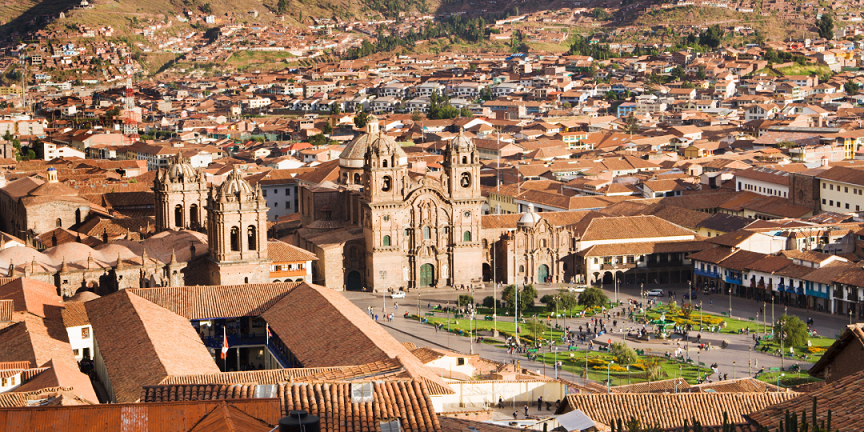

El centro histórico posee atractivos turísticos que son altamente recomendables para los viajeros. La Plaza de Armas, la Catedral del Cusco, la Iglesia de la
Compañía, la calle Hatun Rumiyoc, la piedra de los 12 ángulos, el Barrio de San Blas, el Qoricancha (templo del sol) y el Convento de Santo Domingo son solo
algunos de los puntos obligatorios para los visitantes.
